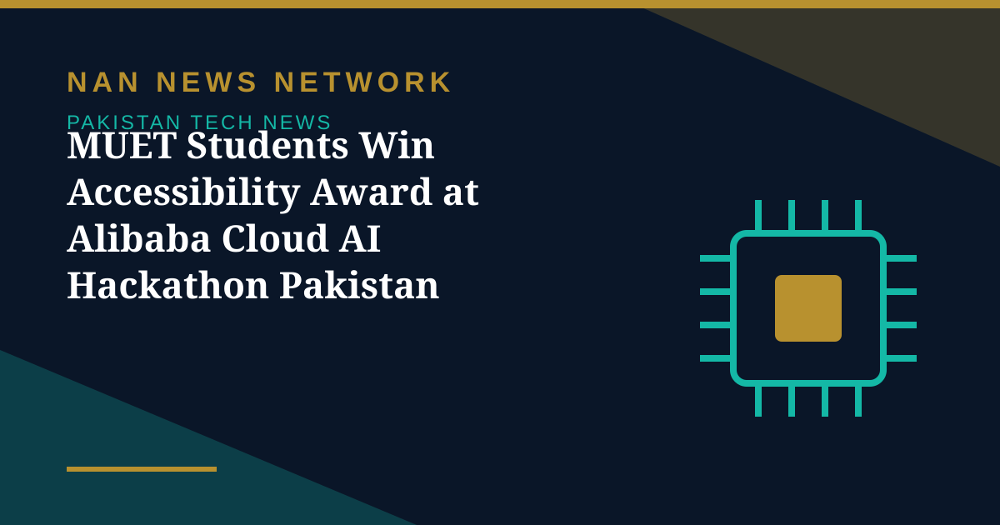

MUET Students Win Accessibility Award at Alibaba Cloud AI Hackathon Pakistan 2026

Students from the Department of Mechatronics Engineering at Mehran University of Engineering and Technology (MUET), Jamshoro, won the Special Award in Accessibility at the national final of the Alibaba Cloud AI Hackathon Pakistan 2026, held on October 24 in Islamabad, CW Pakistan reported on November 2.
What Saans does
Saans is an English and Urdu, offline-first web application designed to help frontline healthcare workers screen children under five for tuberculosis (TB), using guidelines aligned with those of the World Health Organization. The team received $1,000 and 500 Alibaba Cloud credits for the project. The accessibility award recognises projects that make technology or services easier for people to use — a fitting category for a tool built for frontline workers in low-connectivity settings.
A national showcase
The hackathon was organised by Alkhidmat Foundation's Bano Qabil programme with Alibaba Cloud under the theme 'AI for Pakistan's Future,' with teams from several universities placing in the national final. FAST-NUCES teams took the Grand Champion title and several track awards, while MUET's win came through the special award. The announcement does not say whether the team plans to pilot Saans with health authorities in Sindh or elsewhere, so the next steps for the project are not yet known.
Sources: CW Pakistan, November 2, 2026
More on Pakistan Tech News
- AI Demand Lifts Global Trade Outlook to 3.9% — and Opens a Door for Pakistan
- 1.5 Million Pakistani Children Faced Online Sexual Exploitation in a Year, UNICEF-Backed Study Finds
- Pakistan, OIC and D-8 Explore New Science, Technology and Research Cooperation
- Pakistan's Cyber Emergency Team Warns of Spyware That Can Infect Phones Through Online Ads
- Pakistan Climbs to 95th in Global Innovation Index 2026, Regaining 'Overperformer' Status
- Pakistan Launches New E-Passport With Chip, NFC and Biometric Security
- Pakistan Targets 50% Local Value Addition in Mobile Phone Manufacturing
- PTA Fines Mobile and Internet Firms Over Rs3.41 Billion Over Consumer Complaints
- PTA Warns of Rising 5G Security Risks as Cyber Alerts Top 10,000
- Pakistan Internet May Slow Until November 2 as AAE-1 Cable Undergoes Repairs
- PM Sets November Deadline for Alibaba-Backed AI and Digitalisation Projects
- Pakistan's 5G Now Reaches 24 Cities After $509 Million Spectrum Auction
- Pakistan Announces Urdu AI Model 'Buraq' to Keep National Data at Home
- PM Launches Two-Year Drive to Give 500,000 Chromebooks to Talented Students
- Pakistan to Host UN Space Technology Conference on Early Warnings and Climate Action
- PAK-US Tech Connect 2026 Takes 16 Pakistani Tech Firms Across America
- Pakistan Wins 11 Awards at the ASOCIO Digital and AI Awards 2026
- Pakistan Showcases AI Innovations at Abu Dhabi's AI Everything Global 2026